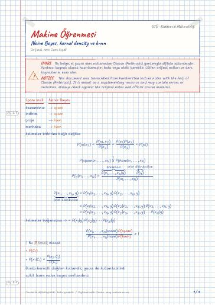

Makine Öğrenmesinin Temelleri · Dijital ders notu
Naive Bayes, kernel density ve k-nn
- Ders
- Makine Öğrenmesinin Temelleri (ELM472)
- Dönem
- 7. Dönem · 2024–2025 Güz
- Biçim
- PDF · 3 sayfa · 0,1 MB · el yazısı görünümlü LaTeX
- Orijinal not
- Ders-5.pdf

Uyarı: Dijital notlar, el yazısı notlardan Claude (Anthropic) yardımıyla oluşturulmuştur; yardımcı kaynak olarak hazırlanmıştır ve hata içerebilir. Orijinal notları ve resmi ders kaynaklarını esas alın.
The digital notes were created from the handwritten notes with the help of Claude (Anthropic); they are meant as a supplementary resource and may contain errors. Always rely on the original notes and the official course materials.
The digital notes were created from the handwritten notes with the help of Claude (Anthropic); they are meant as a supplementary resource and may contain errors. Always rely on the original notes and the official course materials.
Bu notta neler var?
- Kitapta non parametrik kısımlara gireceğiz
Notun metni
Düz metin olarak göster (formüller ve çizimler yoktur)
kelimeler birbirine bağlı değilse
Burda bernolli dağılım kullandık, gauss de kullanılabilirdi
scikit learn naive bayes sınıflandırıcı
Kitapta non parametrik kısımlara gireceğiz
olasılık dağılımı için kullanılabilir o zaman ∫ f(x) = 1 olmalıdır.
→ varyansa göre varyans büyükse h
kernel Approximation fonksiyonlar birbirinin aynısı
Burda bütün verileri tutmamız lazım k-nn de
distance metriği ile çözersek
2-nn için en büyük ikincisi